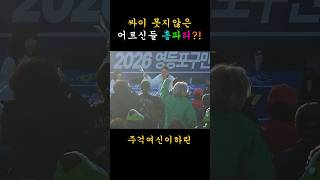
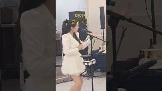
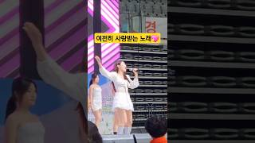
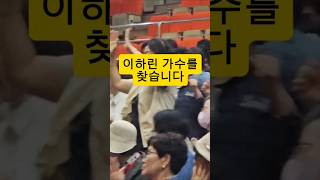

재생 버튼을 누르면 하린 목소리로 바로 들을 수 있어요.
예쁜 게 죄라면 무기징역! 중독성 100%
197명의 기적, 하린이 직접 쓰고 부른 실화
눈물 대신 설렘으로 부르는 재회송
말 안 해도 아는 그 설렘, 데뷔곡
요즘 뜨는 노래, 진정한 트롯발라드
옆으로 밀어서 다른 무대도 보세요 →

SHORTS영등포구 체육대회 · 콘서트가 된 행사장2026년 11월 · 행사 쇼츠
SHORTS주걱 치다 보면 가끔 그래요 · 행사 현장2025년 12월 · 행사 쇼츠
SHORTS장충체육관 어르신 한마음잔치 · 사랑의 거리2025년 6월 · 행사 쇼츠
SHORTS관객과 소통하는 가수 · 행사 만족도 200%2025년 6월 · 행사 쇼츠옆으로 넘겨 보고, 사진을 누르면 저장돼요.
JLyn ENT. 대표 정보경